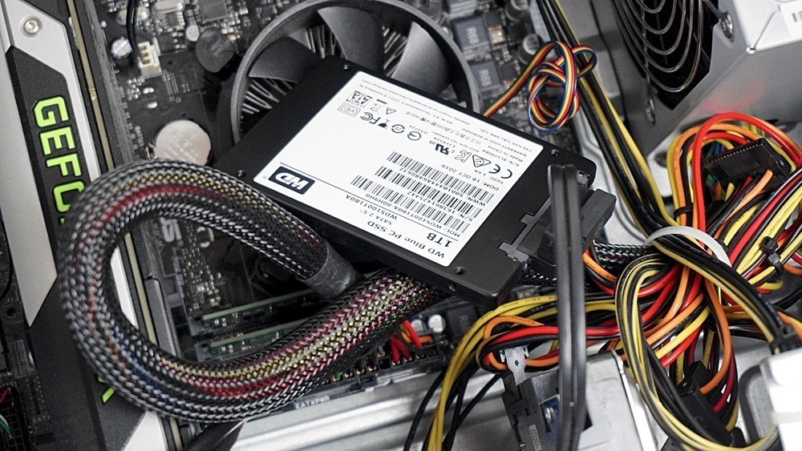

HDD vs SSD: diferencias y ventajas de ambos tipos de disco duro

Vamos a explicarte cuales son las diferencias entre discos duros HDD o SSD. Para eso, vamos a empezar describiéndote de una manera sencilla y fácil de entender cuáles son los rasgos generales de los discos duros, tanto los mecánicos o HDD como de los de estado sólido o SSD. Así, podrás aprender a reconocerlos y diferenciarlos sin problemas.
Después vamos a seguir con una tabla comparativa en la que te vamos a mostrar las principales características de ambos, y continuaremos con una explicación a fondo de cuáles son estas características y qué implica. Finalmente te acabaremos diciendo en qué ocasiones es recomendado utilizar los HDD o SSD, para que si quieres comprar uno puedas tener una decisión informada.
Disco duro o HDD (Hard Drive Disk)
Los discos duros, también conocidos como HDD, son un componente informático que sirve para almacenar de forma permanente tus datos. Esto quiere decir, que los datos no se borran cuando se apaga la unidad como pasa en los almacenados por la memoria RAM. La primera empresa en comercializarlos fue IBM en 1956.
Están compuestos de piezas mecánicas, de ahí que a veces se le llame discos duros mecánicos, y utilizan el magnetismo para grabar tus datos y archivos. Se compone de uno o varios discos rígidos unidos por un mismo eje y que giran a gran velocidad dentro de una caja metálica. En cada plato y en cada una de sus caras, un cabezal de lectura/escritura lee o graba tus datos sobre los discos.
Cuanto más finos sean los discos mejor será la grabación, y cuanto más rápido giran a mayor velocidad se transmiten los datos, tanto a la hora de leerlos como al escribirlos. Por lo general, la velocidad de los discos duros suele ser de 5400 o 7200 RPM (revoluciones por minuto), aunque en algunos discos basados en servidores pueden llegar a hasta 15.000 RPM
En cuanto al tamaño, las cajas de los discos duros mecánicos pueden ser de 2,5" o de 3,5". Su precio puede variar dependiendo de este tamaño, pero sobre todo de su capacidad de almacenamiento. De hecho, la gran ventaja de estos discos duros con respecto a los SSD es que son bastante más económicos.